A stats dashboard covering 14 seasons of competition data — rankings, win rates, lip-sync records, and season-over-season trends, wrapped in a glam-stage visual identity. This is a live product I'm still selling, so what's below is a preview walkthrough rather than the working tool itself.



Why It's Here
Every other project on this site lives in a restrained, editorial visual language built for audit and revenue-ops work. This one doesn't — bold color, a glam display font, and a completely different emotional register, built for an entertainment-fandom audience instead of a finance one. Same design instincts, deliberately pointed somewhere else.
More Than One Dataset
The drag race framing is the demo, not the ceiling. Underneath, this is a genuine reusable D3.js template — four linked chart types (a dual-axis bar+line combo, a mode-switching stacked bar, a ranked horizontal bar, and a data-bound table) all driven by one shared filter and one swappable data object. Change what the categories mean, and the exact same code becomes a different dashboard entirely.
As proof: here's the same template reskinned as a quarterly revenue intelligence dashboard — new data, new color identity, zero changes to the chart-drawing logic itself.
This dashboard is available for licensing or custom builds in a similar style.
Get in Touch →